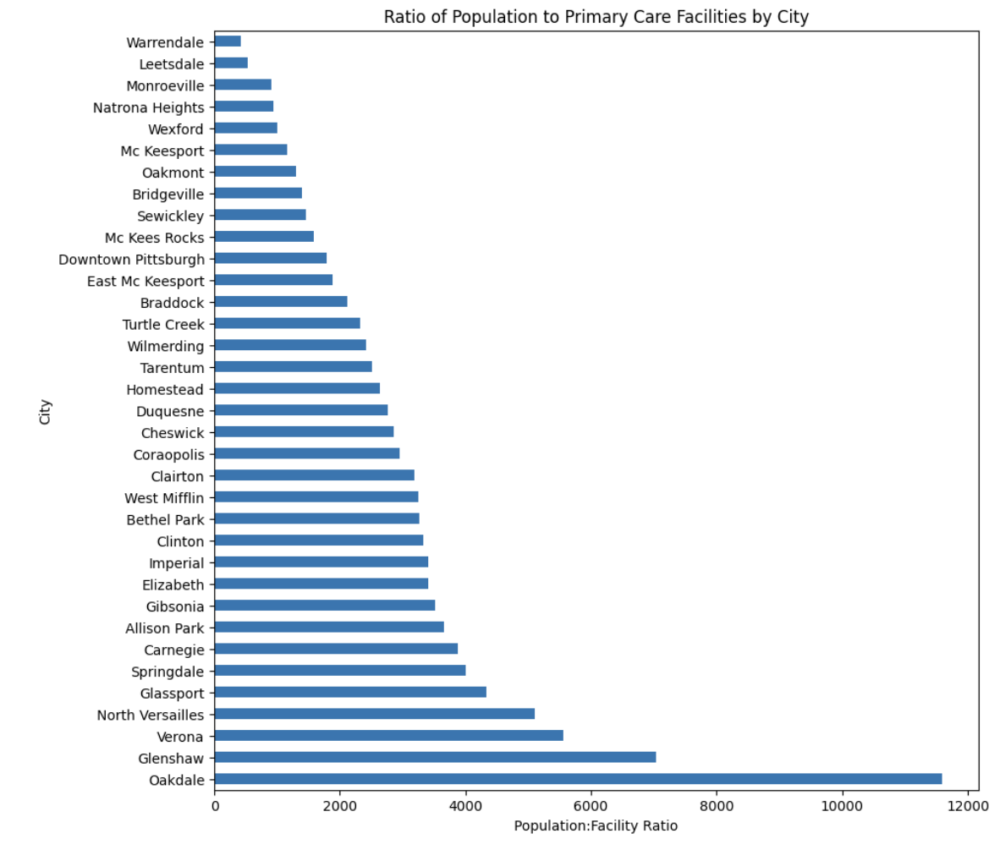

As part of a team of three, I worked on a data visualization project that aimed to find the safest neighborhood in the Greater Pittsburgh Region. We used pandas and python to extract and analyze data from the Western Pennsylvania Regional Data Center (WPRDC). We used three datasets from the WPRDC: sidewalk to street walkability ratio, uniform crime reporting data, and primary care facilities. We assumed that the safest neighborhood would have a high walkability ratio, a low crime rate, and a high accessibility to primary care facilities. We created charts and maps to visualize the data and compare the neighborhoods based on these criteria. We found that the neighborhood of Squirrel Hill South had the highest score for safety among the neighborhoods we considered.
